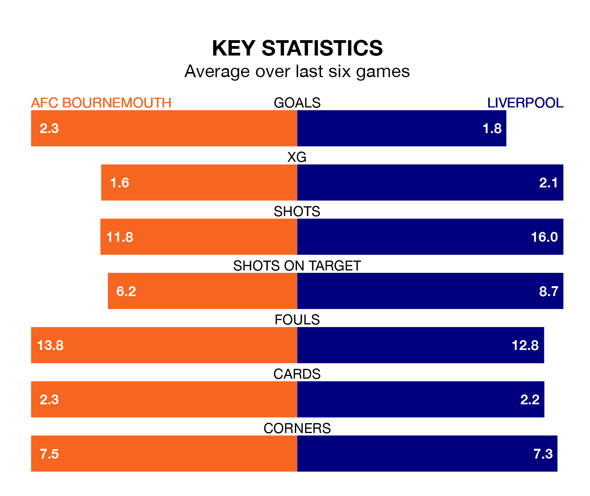

Liverpool face AFC Bournemouth on Sunday seeking to protect their formidable unbeaten run in the Premier League.
The Reds are unbeaten in 13, with eight wins and five draws, ahead of the 4.30pm kick-off.
They face a Bournemouth team who have won seven and drawn one over the same number of games.
Liverpool are top of the table after 20 games, of which they have won 13 and drawn six, earning 45 points.
Bournemouth are 12 places behind the Reds in 13th, with seven wins and four draws putting them on 25 points.
With 43 goals in 20 games so far this season, the visitors are the league's joint-second-highest scorers with 2.1 goals per game. And they are conceding fewer than average, letting in 18 goals at a rate of 0.9 per game.
The Cherries, meanwhile, are below average scorers, with 1.5 goals per game, compared to a league average of 1.6. They have conceded 1.8 goals per game.
In Mohamed Salah, Liverpool have the league's sharpest shooter so far this season. He has notched 14 goals in 20 appearances.
His goal rate of one every 125 minutes is quicker than that of Dominic Solanke, the home team's top scorer with a goal every 142 minutes, and a total of 12 goals in 19 games.
In the last five years, Bournemouth and Liverpool have played each other on seven occasions. Bournemouth won one of them and Liverpool the other.
On average, the Cherries scored 0.6 goals and the Reds 3.1 in those matches.
Their last meeting was on November 1, when Liverpool won 2-1 away.
Bournemouth's last match was on December 31, a 3-1 loss against Tottenham Hotspur, with Alex Scott getting the goal for the Cherries.
Liverpool beat Newcastle United 4-2 last time out, on January 1, with Salah (two), Cody Gakpo and Curtis Jones on the scoresheet.
Updated: 10:50, 10/01/24